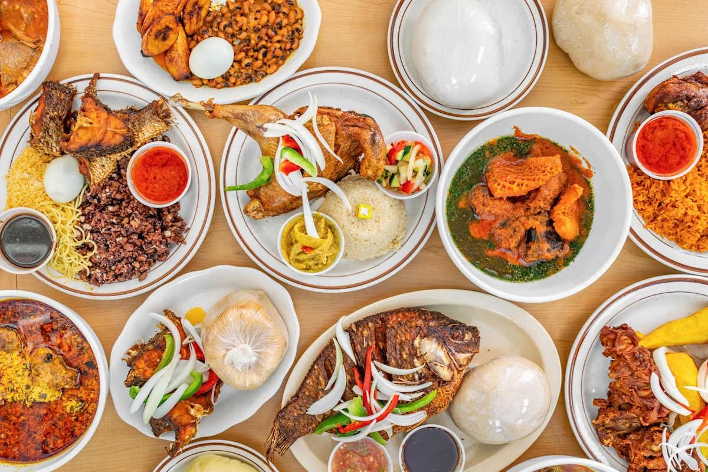

Orientation
Food is more than nourishment. It reflects the history, environment, traditions and identity of the people who prepare it. West Africa is a rich example: its cuisine spans many staple foods, cooking techniques and traditional dishes.
On this page you will locate West Africa, see how geography shapes what people eat, and learn what the word cuisine actually covers.
Why it matters: Every later page — and the dish you cook in Section 3 — builds on this context.
Given examples of staple foods, ingredients, and traditional dishes presented in the module, the learner will classify the examples into the appropriate food categories and cultural or regional contexts with at least 80% accuracy.
How you’ll show it: the Classification Challenge on page 1.5. Target: at least 80% accuracy.
Where is West Africa?
West Africa is the western part of the African continent, stretching from the Atlantic coast toward the interior. It includes Ghana, Nigeria, Senegal, Sierra Leone, Liberia, The Gambia, Côte d’Ivoire, Benin, Togo, Mali, Burkina Faso, Niger, Guinea, Guinea-Bissau and Cabo Verde.
- how much of the region borders the Atlantic coast
- the inland countries, such as Mali, Burkina Faso and Niger, which include drier Sahelian areas

How geography shapes food
The region includes coastal areas, tropical forests, grasslands, savannahs and semi-arid land. These environments shape which crops grow and which ingredients are available.
Coast
Coastal communities often have access to fish, crabs, shrimp and other seafood.
Farming areas
Where conditions suit agriculture, people grow cassava, yam, maize, rice and plantain.
Drier Sahel
Grains such as millet and sorghum are important in many traditional diets.
What is “cuisine”?
Cuisine is a particular style or tradition of cooking associated with a region, culture or community. It includes:
- the ingredients commonly used
- traditional recipes and cooking methods
- flavours, spices and seasonings
- presentation and serving practices
- the customs surrounding food
Six characteristics of West African cuisine
- Locally available staple foods — meals built on rice, cassava, yam, maize, millet, sorghum and plantain.
- Rich, flavourful sauces and soups — made with tomatoes, onions, peppers, palm oil, groundnuts, okra and leafy vegetables.
- Diverse cooking techniques — boiling, steaming, frying, grilling, roasting and slow cooking.
- Aromatic ingredients and seasonings — onions, garlic, ginger, chili peppers, herbs and local spices.
- Regional and cultural diversity — not one uniform tradition. Even the same dish may be made differently.
- Food as a social experience — shared at family meals, gatherings, celebrations and festivals.
Quick check: geography and food
What you’ll learn in Section 1
- 1.2 — Tell staple foods apart from ingredients.
- 1.3 — Recognize selected traditional dishes and where they are associated.
- 1.4 — Explore the role food plays in family and community life.
- 1.5 — Show what you can do in the Classification Challenge.
Key takeaways
- West Africa’s varied environments — coast, forest, savannah, Sahel — shape which foods are available.
- Cuisine covers ingredients, methods, flavours, presentation and customs — not just “what people eat”.
- West African cuisine shares common features but is not a single, uniform tradition.